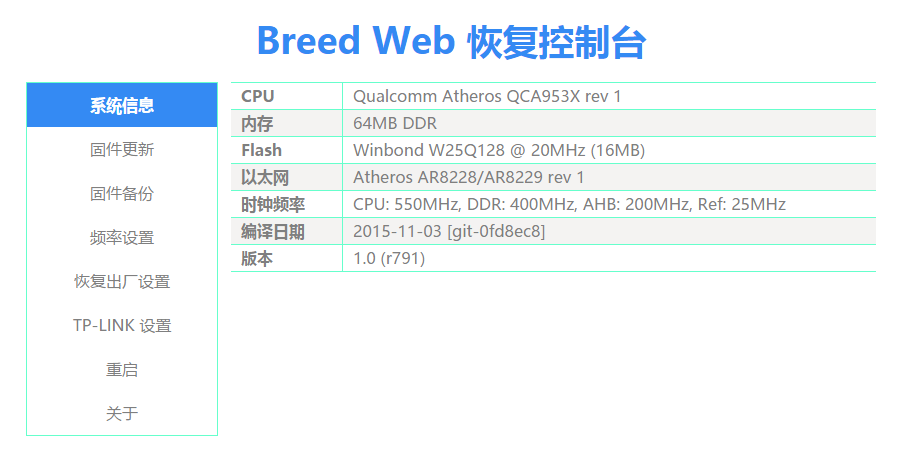

Introduction
Our hackerspace recently got a new tool: a hot air rework station.
I decided to use it to practice by hard-modding a router to run OpenWrt (I had never done this kind of hardware work before).

Preparation
Device: TP-Link WR845N v4

Hardware tools: hot air rework station, temperature-controlled soldering iron (fine tip and knife tip), CH341A programmer, SOP 8/16 adapter board, desoldering braid, solder sucker, flux, rosin, tweezers, solder wire, heat‑resistant tape.
Parts:
- Winbond 16 MB (128 Mbit) SPI flash
- HY5DU121622CTP-D43 DDR 64M×16 memory chip
Software environment: Windows 10 with the CH341A programmer software.
Key hardware steps
Removing the flash
Install a 1-cm nozzle on the hot air gun, set the temperature to 265 °C and the airflow to 6.
Preheat the router PCB first, then heat the flash chip directly. After a dozen seconds or so, the solder on the flash pins will turn shiny — that means it has melted and you can gently lift the chip off with tweezers.
Removing the RAM
Mask the surrounding components with heat‑resistant tape for protection.
Apply plenty of flux along both sides of the RAM chip pins, then add solder to the pins.
While dragging solder along one side, use tweezers to gently push up from the left side. Use upward force, but not too much, or you may tear off pads.
Set the iron temperature to about 380 °C, and lightly slide the tip back and forth across the pins so the solder stays molten; that way one side will lift up. Repeat the same for the other side.
Soldering the Dupont headers
Set the iron to around 350 °C.
Based on how the flash is wired to the socket, plug the Dupont pins into the SOP adapter board.
Place the iron tip against the junction of each Dupont pin and pad, touch it with a bit of solder, and the pin will be fixed in place.

Soldering the flash
Solder the flash onto the SOP adapter board.
Make sure the side of the flash with the dot aligns with the notched side marked on the PCB.

Soldering the RAM
Align the RAM chip with the pads.
Again, the side with the dot should face the side of the PCB footprint with the notch.
First fix two opposite corners with solder, then drag-solder the rest of the pins.
I probably used the wrong solder, because I kept ending up with bridges between pins.
Because of that I had to keep removing and re‑soldering the chip, and on one of the boards several pads eventually lifted.
To clean up bridges, you can use desoldering braid, or carefully scrape away excess solder with a fine needle.
Failed attempt:

Successful attempt:

And finally, I added a small heatsink:

Workflow


First, remove the original flash and use the programmer to back up the firmware.
The important part is the art partition, which contains wireless calibration data and parameters that are slightly different for every device.
Then download a suitable bootloader for this SoC and program it into the new 16 MB flash.
Here I used the Breed bootloader by Hackpascal:
- Hackpascal blog:
http://blog.hackpascal.net/ - Breed thread:
http://www.right.com.cn/forum/thread-161906-1-1.html
After writing the bootloader, solder the new flash back onto the board.
Power on the router, plug in an Ethernet cable, and open http://192.168.1.1 in a browser.

Next, replace the RAM and power on again.
If there are cold joints or bridges, all the LEDs will stay fully lit after power‑on.
Here you can see the RAM successfully recognized as 64 MB:

Then enter Breed and flash both PandoraBox (or another OpenWrt build) and the ART partition.
In my case I flashed an OpenWrt image compiled by Hackpascal.
If you didn’t back up your own ART partition, you can use the one provided by Hackspecial:
- ART thread:
http://www.right.com.cn/forum/thread-136444-1-1.html

Finally, I slapped an Apple logo sticker on it — perfect!

 CC BY-NC-SA 4.0
CC BY-NC-SA 4.0